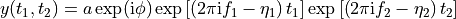
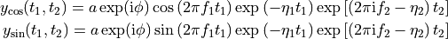
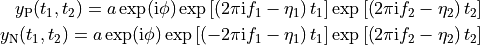
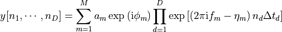
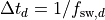
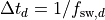

nmrespy.sig¶
Constructing and processing NMR signals
- class nmrespy.sig.PhaseApp(spectrum, max_p1)[source]¶
Tkinter application for manual phase correction.
See also
- nmrespy.sig.ft(fid, flip=True)[source]¶
Performs Fourier transformation and (optionally) flips the resulting spectrum to satisfy NMR convention.
- Parameters
fid (numpy.ndarray) – Time-domain data.
flip (bool, default: True) – Whether or not to flip the Fourier Trnasform of fid in each dimension.
- Returns
spectrum – Fourier transform of the data, flipped in each dimension.
- Return type
numpy.ndarray
- nmrespy.sig.generate_random_signal(m, n, sw, offset=None, snr=None)[source]¶
A convienince function to generate a synthetic FID with random parameters for testing purposes.
- Parameters
m (int) – Number of oscillators
n ([int] or [int, int]) – Number of points in each dimension
sw ([float] or [float, float]) – Sweep width in each dimension
offset ([float], [float, float] or None, deafult: None) – Transmitter offset in each dimension
snr (float or None, default: None) – Signal-to-noise ratio (dB)
fid (numpy.ndarray) – The synthetic FID.
tp ([numpy.ndarray], [numpy.ndarray, numpy.ndarray]) – The time points the FID is sampled at in each dimension.
parameters (numpy.ndarray) – Parameters used to construct the signal
- nmrespy.sig.get_shifts(n, sw, offset=None, flip=True)[source]¶
Generates the frequencies that the FT of the FID is sampled at, given its sweep-width, the transmitter offset, and the number of points.
- Parameters
n ([int] or [int, int]) – The number of points in each dimension.
sw ([float] or [float, float]) – The sweep width in each dimension.
offset ([float], [float, float], or None, default: None) – The transmitter offset in each dimension. If None, the offset will be set to zero in each dimension.
flip (bool, default: True) – If True, the shifts will be returned in descending order, as is conventional in NMR. If False, the shifts will be in ascending order.
- Returns
shifts – The chemical shift values sampled in each dimension.
- Return type
[numpy.ndarray] or [numpy.ndarray, numpy.ndarray]
- nmrespy.sig.get_timepoints(n, sw)[source]¶
Generates the timepoints at which an FID is sampled at, given its sweep-width, and the number of points.
- Parameters
n ([int] or [int, int]) – The number of points in each dimension.
sw ([float] or [float, float]) – THe sweep width in each dimension (Hz).
- Returns
tp – The time points sampled in each dimension
- Return type
[numpy.ndarray] or [numpy.ndarray, numpy.ndarray]
- nmrespy.sig.ift(spectrum, flip=True)[source]¶
Flips spectral data in each dimension, and then inverse Fourier transforms.
- Parameters
spectrum (numpy.ndarray) – Spectrum
flip (bool, default: True) – Whether or not to flip spectrum in each dimension prior to Inverse Fourier Transform.
- Returns
fid – Inverse Fourier transform of the spectrum.
- Return type
numpy.ndarray
- nmrespy.sig.make_fid(parameters, n, sw, offset=None, snr=None, decibels=True, modulation='none')[source]¶
Constructs a discrete time-domain signal (FID), as a summation of exponentially damped complex sinusoids.
- Parameters
parameters (numpy.ndarray) –
Parameter array with the following structure:
1-dimensional data:
parameters = numpy.array([ [a_1, φ_1, f_1, η_1], [a_2, φ_2, f_2, η_2], ..., [a_m, φ_m, f_m, η_m], ])
2-dimensional data:
parameters = numpy.array([ [a_1, φ_1, f1_1, f2_1, η1_1, η2_1], [a_2, φ_2, f1_2, f2_2, η1_2, η2_2], ..., [a_m, φ_m, f1_m, f2_m, η1_m, η2_m], ])
n ([int], [int, int]) – Number of points to construct signal from in each dimension.
sw ([float], [float, float]) – Sweep width in each dimension, in Hz.
offset ([float], [float, float], or None, default: None) – Transmitter offset frequency in each dimension, in Hz. If set to None, the offset frequency will be set to 0Hz in each dimension.
snr (float or None, default: None) – The signal-to-noise ratio. If None then no noise will be added to the FID.
decibels (bool, default: True) – If True, the snr is taken to be in units of decibels. If False, it is taken to be simply the ratio of the singal power over the noise power.
modulation ({'none', 'amp', 'phase'}, default: 'none') –
The type of modulation present in the indirect dimension, if the data is 2D. In the expressions below, a it is assumed a single oscillator has been provided for simplicity.
’none’: Returns a single signal of the form:

’amp’: Returns an amplitude-modulated pair of signals of the form:

’phase’: Returns an phase-modulated pair of signals of the form:

- Returns
fid (numpy.ndarray, [numpy.ndarray, numpy.ndarray]) – The synthetic signal generated.
If the data to be constructed is 1D or 2D with modulation set to ‘none’, the result will be a NumPy array.
If the data is 2D with modulation set to ‘amp’, or ‘phase’ the result will be a length-2 list with signals of the forms indicated above (See modulation).
tp ([numpy.ndarray], [numpy.ndarray, numpy.ndarray]) – The time points the FID is sampled at in each dimension.
Notes
The resulting fid is given by

where
 is either 1 or 2,
is either 1 or 2,  is the number of
oscillators, and .
is the number of
oscillators, and .
- nmrespy.sig.make_noise(fid, snr, decibels=True)[source]¶
Given a synthetic FID, generate an array of normally distributed complex noise with zero mean and a variance that abides by the desired SNR.
- Parameters
fid (numpy.ndarray) – Noiseless FID.
snr (float) – The signal-to-noise ratio.
decibels (bool, default: True) – If True, the snr is taken to be in units of decibels. If False, it is taken to be simply the ratio of the singal power and noise power.
- Returns
noise
- Return type
numpy.ndarray
- nmrespy.sig.make_virtual_echo(data, modulation='amp')[source]¶
Given the time-domain signal data, generates the corresponding virtual echo 1, a signal with a purely real Fourier-Tranform and absorption mode line shape if the data is phased.
- Parameters
data ([numpy.ndarray] or [numpy.ndarray, numpy.ndarray]) – The data to construct the virtual echo from. This should be a list of NumPy arrays, with
len(data) == dwheredis the dimension of the signal.modulation ({'amp' or 'phase'}, default: 'amp') –
If the data is 2D, this parameter specifies the type of modulation present in the indirect dimension of the dataset.
If set to ‘amp’, the two signals in the data should be an amplitude modulated pair.
If set to ‘phase’, the two signals in the data should be a phase modulated pair.
See the docs for
make_fid()for more info on modulation.
- Returns
virtual_echo – The virtual echo signal assocaited with data.
- Return type
numpy.ndarray
References
- 1
M. Mayzel, K. Kazimierczuk, V. Y. Orekhov, The causality principle in the reconstruction of sparse nmr spectra, Chem. Commun. 50 (64) (2014) 8947–8950.
- nmrespy.sig.manual_phase_spectrum(spectrum, max_p1=None)[source]¶
Generates a GUI, enabling manual phase correction, with the zero- and first-order phases returned.
Warning
Only 1D spectral data is currently supported.
- Parameters
spectrum (numpy.ndarray) – Spectral data of interest.
max_p1 (float or None, default: None) – Specifies the range of first-order phases permitted. For each dimension, the user will be allowed to choose a value of p1 within [-max_p1, max_p1]. By default, max_p1 will be
10 * numpy.pi.
- Returns
p0 ([float] or None) – Zero-order phase correction in each dimension, in radians. If the user chooses to cancel rather than save, this is set to None.
p1 ([float] or None) – First-order phase correction in each dimension, in radians. If the user chooses to cancel rather than save, this is set to None.
- nmrespy.sig.oscillator_integral(parameters, n, sw, offset=None)[source]¶
Determines the (absolute) integral of the Fourier transform of an oscillator.
- Parameters
parameters (numpy.ndarray) –
Oscillator parameters of the following form:
1-dimensional data:
parameters = numpy.array([a, φ, f, η])
2-dimensional data:
parameters = numpy.array([a, φ, f1, f2, η1, η2])
n ([int], [int, int]) – Number of points to construct signal from in each dimension.
sw ([float], [float, float]) – Sweep width in each dimension, in Hz.
offset ([float], [float, float], or None, default: None) – Transmitter offset frequency in each dimension, in Hz. If set to None, the offset frequency will be set to 0Hz in each dimension.
- Returns
- Return type
integral
Notes
The integration is performed using the composite Simpsons rule, provided by scipy.integrate.simpson
Spacing of points along the frequency axes is set a 1 (i.e. dx = 1).
- nmrespy.sig.phase(data, p0, p1, pivot=None)[source]¶
Applies a linear phase correction to data.
- Parameters
data (numpy.ndarray) – Data to be phased.
p0 ([float] or [float, float]) – Zero-order phase correction in each dimension, in radians.
p1 ([float] or [float, float]) – First-order phase correction in each dimension, in radians.
pivot ([int], [int, int] or None) – Index of the pivot in each dimension. If None, the pivot will be 0 in each dimension.
- Returns
phased_data
- Return type
numpy.ndarray
- nmrespy.sig.proc_amp_modulated(data)[source]¶
Takes a pair of 2D amplitude-modulated signals, and generates the frequency-discriminated spectrum.
- Parameters
data ([numpy.ndarray, numpy.ndarray]) – cos-modulated signal and sin-modulated signal
- Returns
spectrum – Dictionary of four elements:
rr,ri,ir, andii.- Return type
dict
- nmrespy.sig.proc_phase_modulated(data)[source]¶
Takes a pair of 2D phase-modulated signals, and generates the set of spectra corresponding to the processing protocol outlined in 2.
- Parameters
data ([numpy.ndarray, numpy.ndarray]) – P-type signal and N-type signal
- Returns
spectra – Dictionary of four elements:
rr,ri,ir, andii.- Return type
dict
References
- 2
A. L. Davis, J. Keeler, E. D. Laue, and D. Moskau, “Experiments for recording pure-absorption heteronuclear correlation spectra using pulsed field gradients,” Journal of Magnetic Resonance (1969), vol. 98, no. 1, pp. 207–216, 1992.